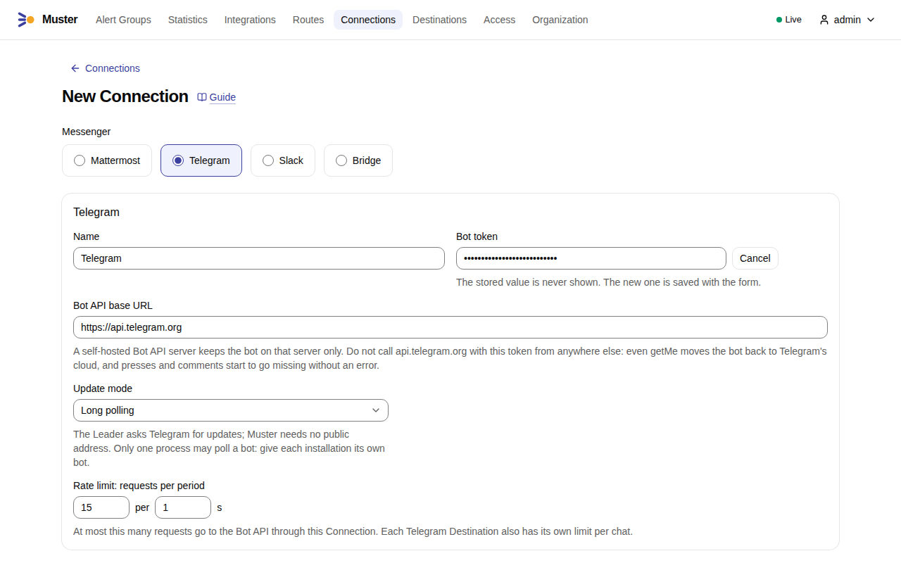
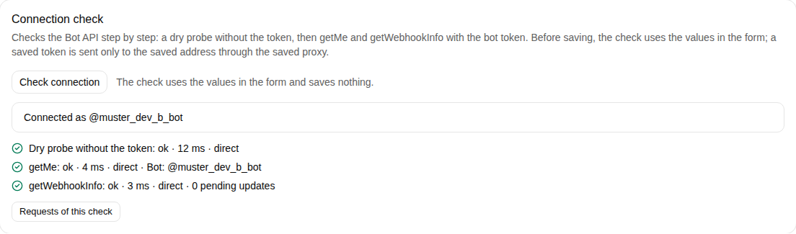
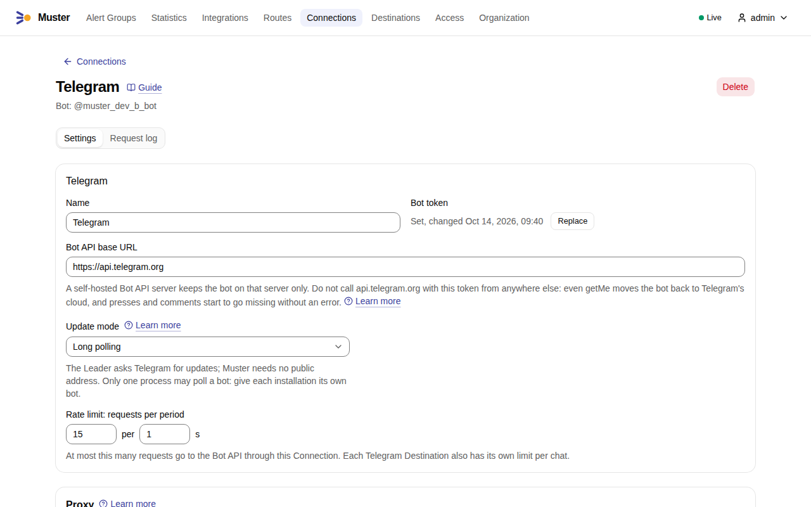
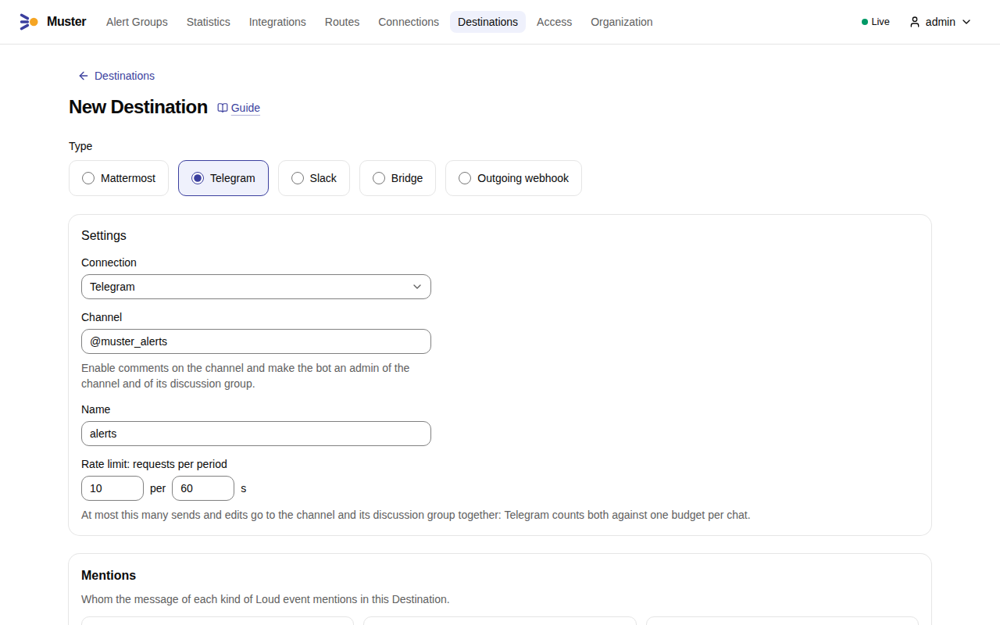
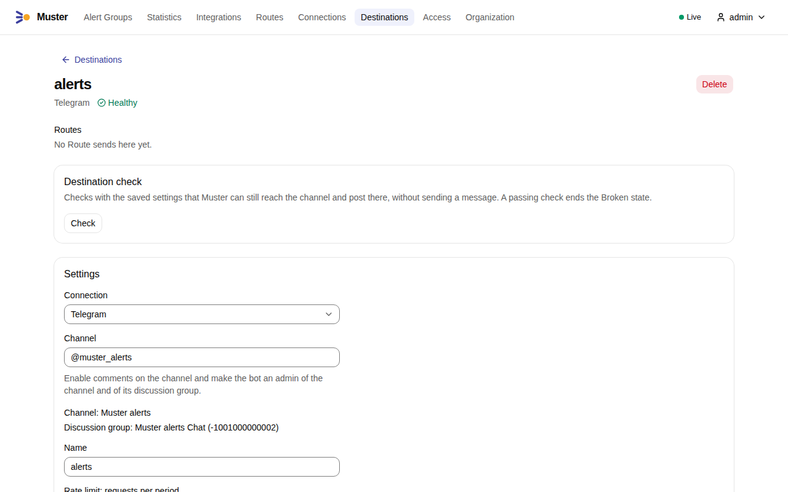

Connect Telegram¶
Muster posts to a Telegram channel through the Bot API with a bot: one channel post per Alert Group, the Root message, which Muster edits as the Alert Group changes. Everything that happens later goes to the channel's discussion group, the group that Telegram creates when comments are enabled on the channel. People act on the Alert Group with the buttons under the post.
In the examples, MUSTER_INGEST_URL is https://ingest.muster.example.org and the bot is @muster_alerts_bot.
Create the bot¶
- In Telegram, open @BotFather and send
/newbot. Give the bot a name and a username, for example@muster_alerts_bot. - Copy the bot token that BotFather sends, such as
123456789:AA…. Anyone with the token controls the bot; Muster stores it encrypted and never shows it again. - Leave the bot's privacy mode on, the default. Muster needs no other setting in BotFather.
Create the Connection¶
- In Muster, open Connections, select Create connection and choose Telegram.
-
Enter a Name, select Set a value next to Bot token and paste the bot token. Keep the Bot API base URL
https://api.telegram.orgunless Telegram is blocked in your network; for a proxy or another address, see Telegram in restricted networks. Keep the Update mode Long polling unless Telegram can reach Muster: see Long polling or webhook.
-
Select Check connection, below the form. The check runs in steps and shows the latency of each and whether it went through the proxy:
- a dry probe,
GET <base>/bot0:x/getMewithout your token, which only a Bot API answers with401and JSON — it tells a wrong address, a wrong path prefix, a proxy that refuses or a web server that is not a Bot API apart before your token goes anywhere; getMewith your token, which names the bot;getWebhookInfo, which says whether a webhook is set and how many updates wait.

- a dry probe,
-
Select Save. On the saved Connection, Check connection records the bot, which the page then names.

Check before saving¶
Check connection checks the values in the form, before anything is saved: in the form of a new Connection, as above, and on the page of a saved one while the form holds changes. It saves nothing: no bot name is recorded and the Audit log gets no entry.
- With the bot token typed in the form, the check runs its three steps against the base URL in the form, through the proxy in the form, with that token.
- Without a token typed, the page of a saved Connection uses its stored token only when the base URL — a trailing
/aside — and the proxy are the saved ones: the stored token is sent only to the saved address, through the saved proxy, since a proxy you have not saved would see it in the path of anhttpbase URL. After a change of the base URL or of the proxy, the check makes only the dry probe there,GET <base>/bot0:x/getMewithout your token, andgetMeandgetWebhookInfoask you to type the bot token again to check the new address or proxy, or to save first. A new Connection without a token gets the dry probe alone too.
The check is POST /api/v1/connections/checks, which needs connections:write; with a Personal access token of an
Admin in MUSTER_TOKEN:
curl -X POST https://muster.example.org/api/v1/connections/checks \
-H "Authorization: Bearer $MUSTER_TOKEN" -H 'Content-Type: application/json' \
-d '{"type":"telegram","bot_api_base_url":"https://api.telegram.org","update_mode":"long_polling",
"bot_token":"123456789:AA…"}'
Add "connection_id":"CN…" to check the changes of a saved Connection, whose stored token the rule above may use.
Enable comments on the channel¶
A Telegram Destination is a channel with comments. Comments on a channel post live in the channel's discussion group, and Muster writes everything about an Alert Group after its Root message there.
- Create the channel, or open an existing one.
- In the channel's settings, open Discussion and add a group, or let Telegram create one. This enables comments, and Telegram links the group to the channel.
You never enter the group in Muster: the Destination check finds it through the channel.
Make the bot an admin of the channel and of the group¶
- In the channel's settings, under Administrators, add the bot. Telegram adds a bot to a channel only as an admin: added as a subscriber, it stays outside the channel. Allow it to post messages and to edit messages of others; Muster needs both, because it edits its own posts as the Alert Group changes.
- In the discussion group's settings, under Administrators, add the bot as well. An admin may always post in the group. The bot must be an admin, not a plain member: Telegram does not send a bot that is a plain member the copies of the channel's posts in the group, which the Threads of the Root messages hang under.
Add a Destination¶
A Telegram Destination is the channel only: Muster finds its discussion group.
- Open Destinations, select Create destination and choose Telegram.
-
Choose the Connection and enter the Channel: its chat id, such as
-1001234567890, or@usernamefor a public channel. Give the Destination a Name.
-
Select Save. Saving runs the Destination check:
getChaton the channel: it exists and is a channel, and it names its discussion group;getChatMemberfor the bot in the channel: an admin allowed to post and to edit messages;getChatMemberfor the bot in the discussion group: an admin there.
A Destination that fails the check is not saved, and the check says what to fix:
- "Comments are not enabled for this channel. Enable comments in the channel settings in Telegram; this creates its discussion group."
- "The bot is not an admin of the discussion group {group}. Make the bot an admin there, allowed to post messages."
- "The bot is not an admin of the channel.", "The bot may not post messages in the channel." or "The bot may not edit messages in the channel."
The saved Destination shows the channel and the discussion group it found.

-
Under Test and preview, on the tab Test, select Send test message. A message marked 🧪 appears in the channel; the result shows the request Muster sent, with the bot token as
bot[redacted], and Telegram's answer. Links in the screenshot start withhttp://localhost:8080, the address of a development installation; yours start with yourMUSTER_PUBLIC_URL.
Muster keeps sending to that channel and that group: when comments are moved to another group later, or the
@username to another channel, the check fails with "The channel or its discussion group changed since the
Destination was saved. Save the Destination again." until you save it. Check on the Destination page runs the same
check at any time, and muster doctor prints one line per Telegram Destination with its result. When Telegram refuses
the bot later — for example, someone removed its admin rights — the Destination becomes Broken; Muster runs the
same check every few minutes while nothing waits for the Destination, and ends the Broken state once the check passes
again.
Long polling or webhook¶
Muster receives the bot's updates — button presses and the messages of the discussion group — in one of two update modes, set on the Connection:
- Long polling, the default. The Leader asks Telegram for updates with
getUpdates. Muster needs no public address: it only calls out to Telegram. Only one process may poll a bot: when a second one starts — another Muster installation with the same token, or a test script — Telegram ends one of the polls with409 Conflict, and the two then take turns. Muster backs off and logstelegram_poll_conflict; the Destination does not become Broken. Give each installation its own bot. - Webhook. Telegram posts each update to Muster at
https://ingest.muster.example.org/api/v1/callbacks/telegram/CN…, underMUSTER_INGEST_URL, with a secret token header that Muster checks. Saving the Connection in this mode callssetWebhook; leaving the mode, or deleting the Connection, callsdeleteWebhook. Use the webhook mode when Telegram can reachMUSTER_INGEST_URLover HTTPS.
Where Telegram is blocked, a Connection can reach the Bot API through a proxy or through another Bot API address; see Telegram in restricted networks.
Join the discussion group and mute the channel¶
For the people on call:
- Join the discussion group, and mute the channel itself. Telegram copies every channel post into the discussion group, so each new Alert Group reaches the members of the group once, through its copy, with the Thread of its replies under it.
- Only members of the discussion group are notified about the replies in a Thread — even a reply that mentions them. Someone who only subscribed to the channel sees the Root messages, but not what happens to them later.
Known limitation: Quiet Root messages ring the group¶
A Quiet Root message is sent with disable_notification, which in Telegram silences the notification but does not
remove it. Members of the discussion group still get a notification with sound for every new Alert Group, because
Telegram notifies them about the copy of the post in the group, and that copy cannot be sent without sound.
What Muster sends¶
- The Root message is a regular message in Telegram's HTML: the status and
#Nwith the title, linked to the Alert Group page, the labels in an expandable quote, the summary, one line per Alert — never a table, which phones cannot show — the link to Muster and the footer. The footer — "Acknowledged by", "Snoozed by", "Resolved by" — names a person with a Telegram Account link by a link to their account with their Muster name, as a Mention does, and anyone else by their name as text. Alert data are escaped, so a label value cannot format the message or mention anyone. A message is at most 4,096 characters: a long one drops its Alert lines first, then the label sections, but always keeps its title, status, footer, buttons and link to Muster. - Every edit of the Root message carries all its buttons again, because Telegram removes the buttons of a message edited without them. The bot may edit its own messages at any age.
- Muster never replies inside the channel: a reply there would be a new post that notifies every subscriber.
- The bot token never appears in a log line, an error, the Timeline or a metric: logs show the scheme and host of the
Bot API address only, and the token in a request path is written as
bot[redacted].